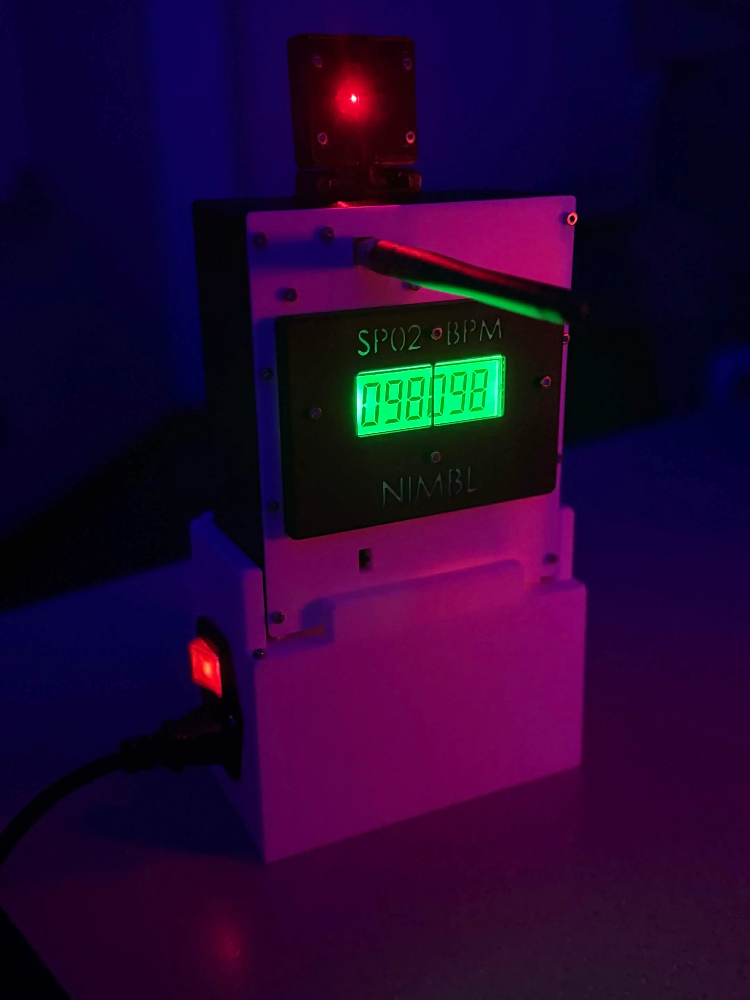
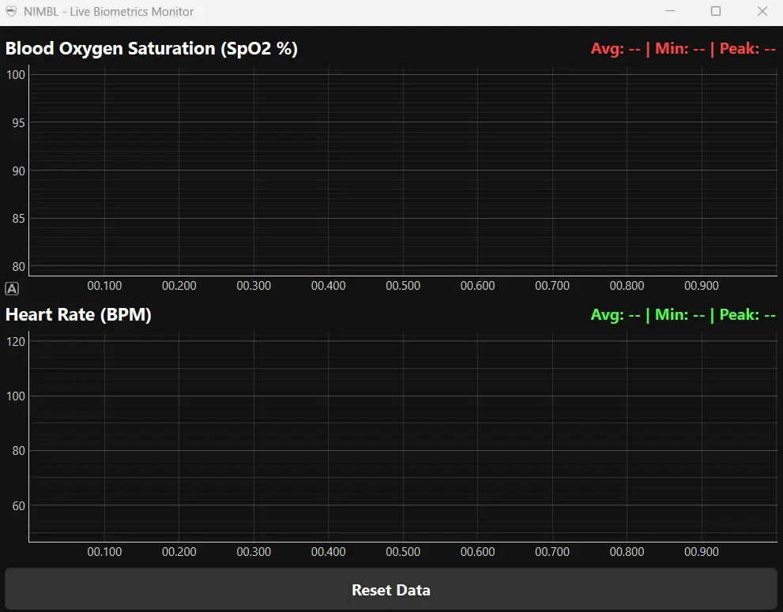
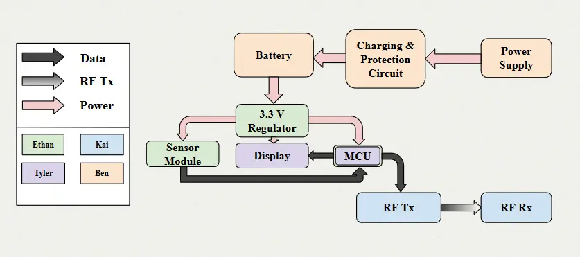
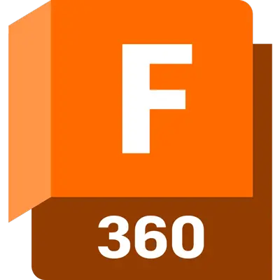
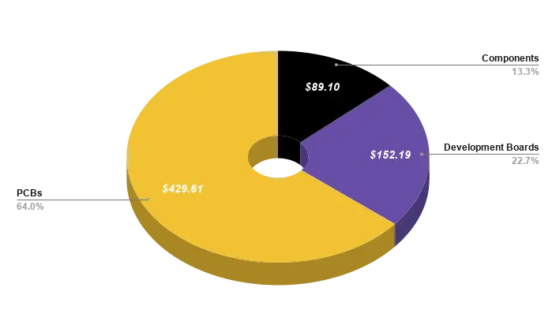

Project Overview
Whether providing important insights in an emergency or measuring the vitals of a sleeping baby, pulse rate and blood oxygen saturation are common baseline indicators of general health. Many pulse oximeter designs don't allow for the wireless transmission of the measured data for long-term analysis. In the cases where these modules do exist, they are very costly. This project aims to solve all of those issues.
Group 30 Members
Ethan Denner
Electrical Engineering
Contributions: PPG research, sensor selection, main PCB fabrication, circuit design, mechanical design.
LinkedIn ProfileKai Ford
Electrical Engineering
Contributions: Radio Module development, RF board selection, RF PCB fabrication, video editing.
LinkedIn ProfileTyler Takimoto
Computer Engineering
Contributions: MCU & display selection, firmware and software development, website creation.
LinkedIn ProfileBenjamin Will
Electrical Engineering
Contributions: Power circuit researcher and designer, PCB fabrication, charging circuit designer.
LinkedIn ProfileProject Details
Within the design we have a few main modules.
The main PCB holds connectors that link our separate modules together and our TI MSP430FR2476 microcontroller that communicates to all of our peripherals.
Our sensor module utilizes the SparkFun MAX32664 to measure the vitals information of our users. It is designed in such a way that the module can be detached from the main body for improved comfort.
The vitals information is displayed with the HT1621 LCD controller, showing 6 digits with 7 segments each. The 6 digits are treated as 2 segments of 3 digits each.
Once the data is read by our MCU, we communicate with the CC1101 radio module to transmit the blood oxygenation and heart rate to our base station.
To charge and power the system, we provided a port for an IEC C13 cable. A battery is included to allow for portable use.
Goals
Basic
- Offer a safe and accurate noninvasive biomonitoring experience by featuring power element isolation between the electrical systems and the user. We will also radiate within the appropriate bandwidths and at the appropriate power levels for RF communications.
Advanced
- Make the device versatile. By versatile, we mean that the design should be modular in such a way that it could fit onto various mounts and inside of various casings.
- High power efficiency would also contribute to realizing a versatile biomonitor; the longer that the device can operate on a single charge, the better.
Stretch
- Maximize long-term utility and data storage by effectively communicating data to an external base station via RF communications.
Objectives
Basic
- Isolate power storage and circuit elements from the user.
- Accurately measure pulse rate and blood oxygen levels using noninvasive sensing.
- Utilizing an on-board processor, leverage software to transform sense data into visualizations: a percentage (for blood oxygen monitoring) and a pulse rate measurement.
Advanced
- Total prototype weight under 3kg.
- Ensure that the prototype can operate for at least three continuous hours of screen-on time.
- Communicate data via RF to a base station for storage.
Stretch
- Establish software for processing stored biometric data to generate long-term analyses.
Project Design
Below are detailed pictures and descriptions of the NIMBL project design.

Here is our fully designed project. At the top with the red light is our PPG sensor. The middle section houses our rf transceiver, LCD, power switch, and labels for the measured values. Below the main section is our docking station that uses wall power to charge the device.

This is the Python frontend that we designed for displaying our wirelessly received data. We record the current, average, min, and max values for the two vitals measurements.
System Architecture
The following block diagram illustrates the high-level system architecture of the NIMBL device, showcasing the interaction between our hardware modules, microcontroller, and the base station.

Technologies & Software
 Python
Python

Fusion360 CSS
CSS
 GitHub
GitHub
Bill of Materials (BOM)
A cost-effective design was a major priority for NIMBL. Below is a breakdown of our final project component costs.

Project Deliverables
Jump to:
Divide and Conquer Document
Midterm Milestone Report
Not Implemented Yet
SD1 Final Report
Mini Demo Video
8-Page Conference Paper
SD2 Final Report
Not Implemented Yet
Critical Design Review Presentation Video
Critical Design Review Presentation Slides
Midterm Demonstration Video
Not Implemented Yet
Final Presentation Video
Final Presentation Slides
Final Demonstration Video
Component Datasheets
Below are links to the datasheets of the core components used in the NIMBL project.
GitHub Repositories
Acknowledgements
We would like to extend our sincere gratitude to our project advisor, as well as our reviewers, for their invaluable guidance, support, and feedback throughout the development of NIMBL.